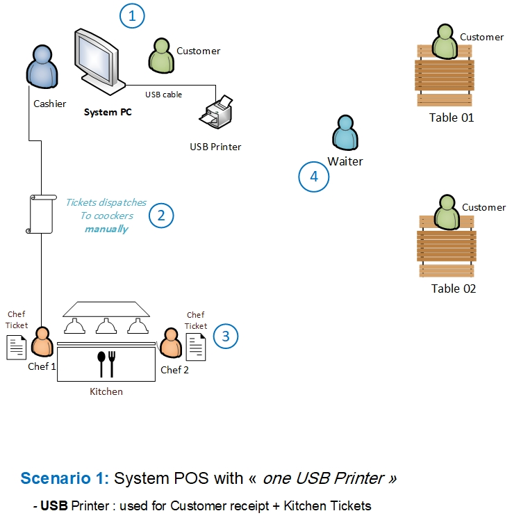
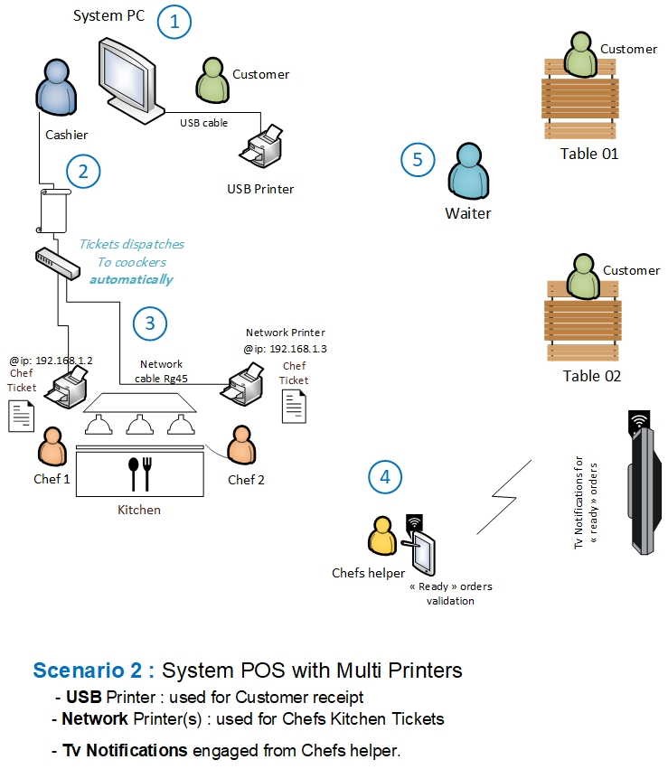
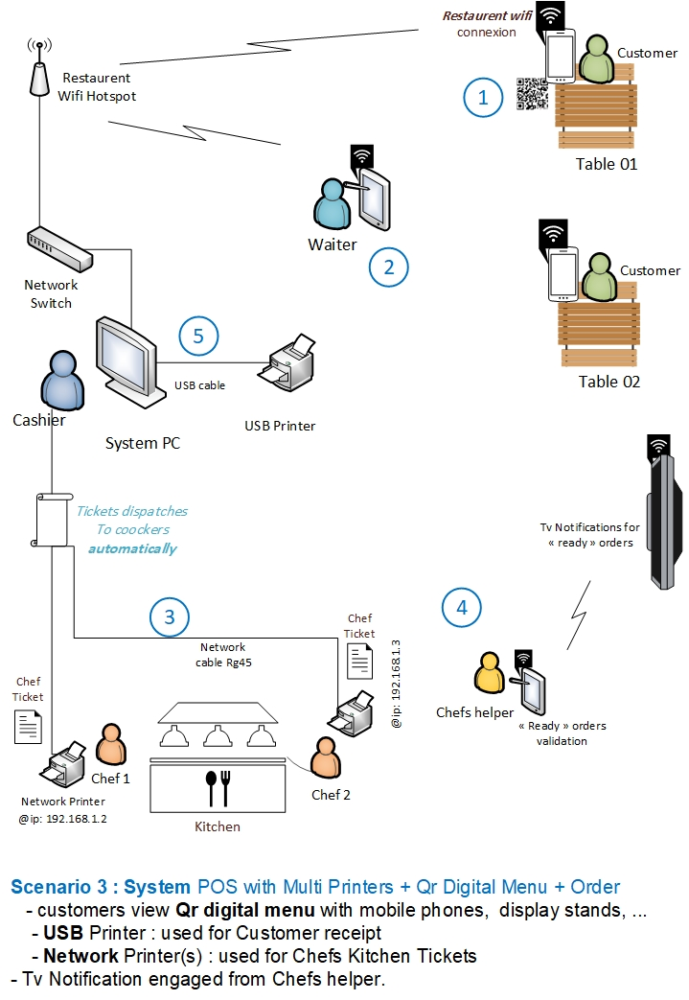
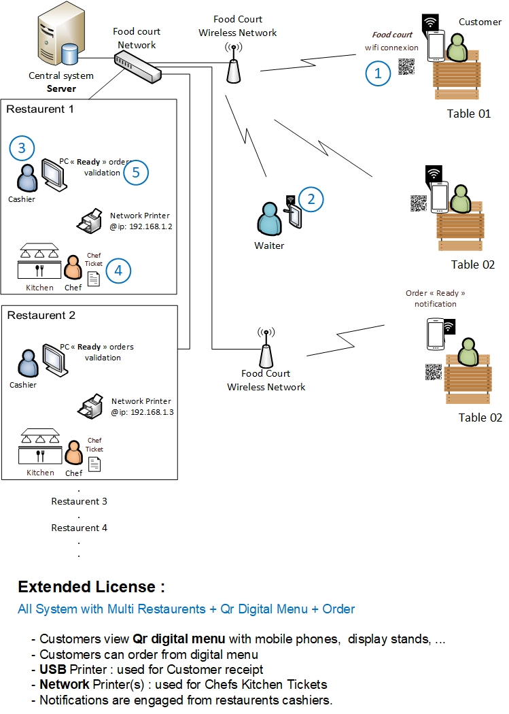

eatSmartly مرن ويتكيف مع جميع أنواع المطاعم — من المقاهي الصغيرة إلى المجمعات الغذائية الكبيرة. اختر الوضع الذي يناسب نشاطك التجاري.
الحل الأمثل للمقاهي الصغيرة والمطاعم الناشئة التي تبحث عن نظام بسيط وفعال. طابعة USB واحدة تُستخدم لطباعة تذاكر المطبخ وفواتير الزبائن معاً — إعداد سريع وتكلفة في حدودها الدنيا.

يأخذ النادل الطلب من الطاولة، أو يقوم الزبون بتقديم طلبه مباشرةً عند الكاشير.
يُدخل الكاشير الطلب في EatSmartly ويضغط على تحقق. عند هذه النقطة، يختار الكاشير بين خيارين:
تطبع الطابعة USB تذكرة المطبخ. يتم توزيع التذاكر يدوياً على الطباخ/الطباخين. يقوم طاقم المطبخ بتحضير الطلب وفقاً للتذكرة المطبوعة.
بمجرد أن يكون الطعام جاهزاً، يقدمه النادل للزبون. إذا لم يتم تحصيل الدفع في الخطوة 2، يدفع الزبون في هذه المرحلة ويطبع الكاشير الفاتورة.
مصمم للمطاعم المتوسطة التي تضم أكثر من محطة تحضير. تُوزَّع الطلبات تلقائيًا عبر الشبكة المحلية على كل طابعة حسب القسم، مع إشعارات فورية على شاشة التلفاز عند اكتمال كل طلب.

يأخذ النادل الطلب من الطاولة، أو يضعه الزبون مباشرةً عند الكاشير.
يُدخل الكاشير الطلب في EatSmartly ويتحقق منه. فوراً:
يستلم كل طباخ التذكرة على طابعته الشبكية المخصصة. بدلاً من ذلك، تتولى طابعة شبكية مشتركة واحدة معالجة جميع تذاكر المطبخ.
يستخدم طاقم المطبخ محطة مساعد الطباخ (كمبيوتر شاشة لمس أو تابلت) للتحقق من جاهزية الطلب. بمجرد التحقق، يظهر إشعار على شاشة التلفاز:
في مطاعم الخدمة على الطاولة، يأخذ النادلون الطلب الجاهز عندما يظهر على شاشة التلفاز. في الإعدادات ذاتية الخدمة، يستلم الزبائن طلباتهم عندما يظهر رقمهم. تُطبع الفاتورة من طابعة USB عند دفع الزبون.
يمتد هذا السيناريو على إعداد الطابعات المتعددة بإضافة قوائم QR الرقمية وإمكانية الطلب الذاتي للزبائن. يتصل الزبائن بشبكة Wi-Fi المحلية للمطعم — دون حاجة للإنترنت — ويفحصون الكود للاطلاع على القائمة التفاعلية. جميع الطلبات تُراجَع وتُصادَق من النادل أو الكاشير قبل إرسالها للمطبخ.

يراجع النادل أو الكاشير جميع الطلبات المقدمة من الزبائن على تابلت أو جهاز محمول أو طرفية POS. يتحقق من توفر الأصناف، ويعدلّها إذا لزم الأمر، ويتحقق من الطلب. فقط بعد تحقق الموظف يصبح الطلب "نشطاً" وينتقل إلى سير عمل المطبخ.
بمجرد التحقق، تُرسَل الطلبات تلقائياً:
يستخدم طاقم المطبخ محطة مساعد الطباخ للتحقق من جاهزية الأصناف. تتحدث حالة الطلب في الوقت الفعلي وتظهر على:
تتبع طلب الزبون — يتتبع الزبائن طلبهم في تبويب "التتبع" في قائمة QR:
يمكن للزبائن أيضاً تفعيل إشعارات الهاتف للتنبيه عند جاهزية طلبهم.
هذا السيناريو مُصمَّم لمجمعات الطعام والمولات التجارية حيث تتشارك مطاعم متعددة نفس المساحة. يتصل الزبائن بشبكة Wi-Fi المحلية للمول، يفحصون كود QR المشترك أو يستخدمون أكشاك الشاشات التفاعلية للوصول إلى قائمة رقمية موحدة تضم جميع المطاعم المشاركة. يمكن للزبائن تصفح الأصناف، وضع الطلبات، وتتبع حالة طلباتهم لحظياً.

يستلم موظفو مجمع الطعام (وليس موظفو المطعم) جميع الطلبات المقدمة من الزبائن. يراجعون ويتحققون من كل طلب — التحقق من التوفر، منع الطلبات الوهمية، وتعديل الكميات إذا لزم الأمر. بمجرد التحقق، يقوم النظام تلقائياً بتقسيم الطلب لكل مطعم. يستلم كل مطعم تذاكره المخصصة عبر طابعات POS/المطبخ.
يبدأ كل مطعم في تحضير طلباته المتحقق منها. تُرسَل تذاكر المطبخ إلى طابعات المطبخ الشبكية. يحضّر الطباخون بناءً على تذاكرهم، مشابهاً للسيناريوهات السابقة.
يتابع الزبائن تقدم الطلب عبر الهواتف الذكية أو أكشاك الطلب:
تُعرَض الحالة أيضاً على شاشات التلفاز في جميع أنحاء مجمع الطعام. يمكن للزبائن تفعيل إشعارات الهاتف عند جاهزية طلبهم.
في نهاية الوجبة، يدفع الزبائن لكل مطعم على حدة مقابل طلباتهم الخاصة. هذا هو سير العمل المرجعي الحالي — يمكن تحديد نماذج دفع مركزية بديلة بالتنسيق مع إدارة المول.